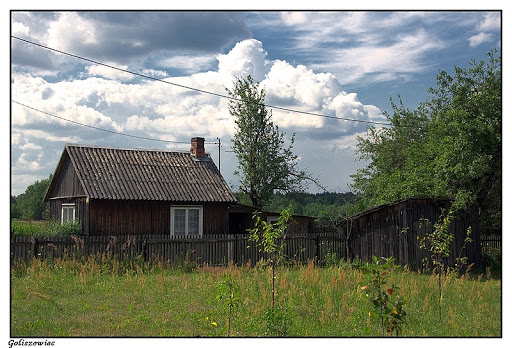
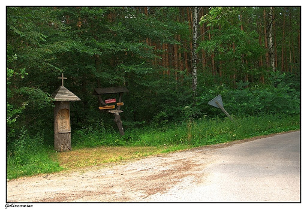

Goliszowiec
Goliszowiec – wieś w Polsce położona w województwie podkarpackim, w powiecie stalowowolskim, w gminie Zaklików. Leży na południowym skraju kompleksu Lasów Janowskich; siedziba sołectwa Goliszowiec.
W latach 1975–1998 miejscowość administracyjnie należała do województwa tarnobrzeskiego.
30 września 1942 oddział SS dokonał pacyfikacji wsi. Część mieszkańców zdążyła schronić się w pobliskim lesie. W domach pozostali jedynie starcy i dzieci. Niemcy zamordowali 41 osób a wieś całkowicie spalili.


źrodło:
Wikipedia